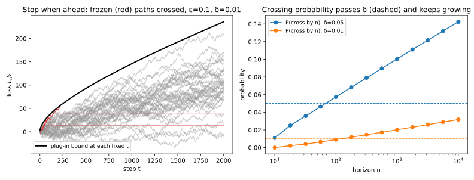
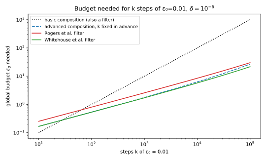

34 Adaptive composition: filters, odometers and individual accounting
34.1 Why this matters
You train a model with differential privacy (DP) using stochastic gradient descent (SGD) with clipped per-example gradients and Gaussian noise, called DP-SGD. You may want to stop when the validation loss stalls, lower the noise mid-run, or let well-fitted records keep training. Every composition theorem so far assumes the opposite: the per-step budgets \(\varepsilon_1, \dots, \varepsilon_k\) and the number of steps \(k\) are fixed before the run (Advanced and optimal composition). Once they depend on what the run released, they are random, and plugging the values you happened to use into a fixed-parameter theorem afterwards is not valid.
So the question splits in two. A privacy filter answers “may I run one more step without exceeding a budget fixed in advance?” A privacy odometer answers “how much have I spent so far?”, and since you may stop at any moment, its answer must hold at every step at once. Both rest on one fact about Rényi differential privacy (RDP): at an order fixed before the run, adding up the spends as you go is as safe as if they had been fixed. That makes a filter free, an odometer cheap, and per-record accounting possible.
34.2 Why plugging in the realized parameters fails
Advanced composition is a high-probability statement: at a time \(t\) fixed in advance, the total privacy loss exceeds a bound \(U_t\), its mean plus a spread growing like \(\sqrt t\), only with probability \(\delta\). It says nothing about a time chosen by watching the outputs. An analyst who stops when the loss happens to be high picks exactly the paths on which the bound fails, and so does stopping on anything correlated with it, such as “these answers look unusual”.
Ask randomized response with \(\varepsilon = 0.1\) about one person’s bit at every step. Each report moves the privacy loss up or down by 0.1, so the loss is a random walk with a slight upward drift. At any single step up to 1,000, the plug-in bound at \(\delta = 0.01\) fails with probability at most 0.0016. Now stop at the first crossing and report \(U_T\). The bound is narrow early, when \(\sqrt t\) is small, so a few walks cross it early and are frozen there (Figure 34.1). By \(10^4\) steps a fraction 0.0318 of runs have crossed (Table 34.1): “\(\varepsilon = U_T\) with \(\delta = 0.01\)” is wrong 3.18 times as often as it claims. A smaller \(\delta\) does not save it (Table 34.1, last row).
| Horizon \(n\) | 100 | 1000 | 10,000 |
|---|---|---|---|
| \(\delta = 0.05\) | 0.0575 | 0.1004 | 0.1424 |
| \(\delta = 0.01\) | 0.0090 | 0.0202 | 0.0318 |
| \(\delta = 10^{-5}\) | \(3.12\times10^{-6}\) | \(1.80\times10^{-5}\) | \(3.69\times10^{-5}\) |

The probability keeps growing because a random walk eventually wanders further than any fixed multiple of \(\sqrt t\) (its reach grows like \(\sqrt{t\ln\ln t}\)), so given time it crosses with certainty. A valid running bound must be wider, and Rogers et al. (2016) showed that every odometer pays at least an extra \(\ln\ln n\) inside the logarithm for \(n\) steps.
Basic composition escapes the problem: the sum of the realized \(\varepsilon_t\) bounds the loss of every output, so there is no bad event for a stopping rule to select. A filter escapes it too, because it makes no running claim to catch at a bad moment; it only asks whether the next step fits a budget fixed in advance.
34.3 The Rényi filter
RDP describes each step by a curve \(\varepsilon_t(\alpha)\) over orders \(\alpha > 1\), and with fixed parameters the curves of a run add (Rényi DP). This survives adaptivity at one fixed order. Fix an order \(\alpha\) and an RDP budget \(B\) before the run. Let step \(t\) be \((\alpha, \varepsilon_t(\alpha))\)-RDP whatever happened before it, with \(\varepsilon_t(\alpha)\) known before the step runs. Run step \(t\) only if the spends so far, its own included, fit: \[\sum_{j \le t}\varepsilon_j(\alpha) \le B. \tag{34.1}\] Then the stopped run is \((\alpha, B)\)-RDP, as if the spends had been fixed.
The reason is a betting argument. Treat \(e^{(\alpha - 1)(\text{loss} - \text{spend})}\) as your wealth in a game. RDP at order \(\alpha\) bounds the average of \(e^{(\alpha - 1)\times\text{loss}}\), so a step charged its RDP spend cannot make this wealth grow on average: the game is fair or tilted against you. In such a game no quitting rule raises your expected final wealth, as long as you decide whether to play each round before seeing its result. If the total spend is at most \(B\) on every path, the average of \(e^{(\alpha - 1)\times\text{loss}}\) at the end is at most \(e^{(\alpha - 1)B}\), which is exactly what \((\alpha, B)\)-RDP says.
Each condition is a step of that argument. A step’s price must be known before it runs: a mechanism allowed to charge little on exactly the outputs that reveal most would make the game a winning one. The budget must hold on every path, not on average, because the paths that spend most may be those where the loss is high. And the order must be fixed in advance. You may track several orders and halt when any one is exhausted, since then each held on every path; continuing while some order still fits, chosen after seeing the spends, is not free (Section 34.5 prices it).
You train with full-batch noisy gradient descent towards \((5.299, 10^{-5})\) at order \(\alpha = 5.8\). Mironov’s conversion turns \((\alpha, B)\)-RDP into \((B + \ln(1/\delta)/(\alpha - 1), \delta)\)-DP, so run backwards it sets \(B = 5.299 - \ln(10^5)/4.8 = 2.900\). A full-batch Gaussian step with noise multiplier \(\sigma_t\) spends \(\alpha/(2\sigma_t^2)\). With \(\sigma_t = 10\) each step spends \(5.8/200 = 0.0290\) and you get 100 steps. If training plateaus at step 60 and you drop to \(\sigma_t = 5\), each later step costs \(5.8/50 = 0.1160\), and the filter allows \((2.900 - 60\times0.0290)/0.1160 = 10\) more. Either way the run is \((5.8, 2.900)\)-RDP, whatever rule decided the switch.
At a fixed order the filter costs nothing. It can even beat fixed-curve composition, which charges every step its worst branch, while the filter charges what each path spent.
34.4 Filters for pure differential privacy
An interactive query system has a global budget \((\varepsilon_g, \delta)\), and each query brings a pure-DP \(\varepsilon_t\) chosen after earlier answers. Summing the \(\varepsilon_t\) is valid but grows like the number of queries \(k\); you want advanced composition’s \(\sqrt k\) without the failure of Section 34.2.
The Rényi filter delivers it. An \(\varepsilon_t\)-DP step spends at most \(\alpha\varepsilon_t^2/2\) at every order \(\alpha\) (Concentrated differential privacy). So a rule that keeps \(\frac12\sum_t\varepsilon_t^2\) below a fixed level is a Rényi filter at every order at once, and because the rule does not mention the order, the conversion may pick the best one afterwards. Doing that conversion gives the Whitehouse filter (Whitehouse et al. 2023): continue while \[\sqrt{2\ln(1/\delta)\textstyle\sum_t\varepsilon_t^2} + \tfrac12\textstyle\sum_t\varepsilon_t^2 \le \varepsilon_g, \tag{34.2}\] with sums over every step so far. It reads like advanced composition, the first term the spread of the total loss and the second its mean, and the stopped run is \((\varepsilon_g, \delta)\)-DP.
At \(\delta = 10^{-6}\) and \(\varepsilon_g = 1\), the filter allows 349 steps of 0.01, slightly more than the 337 of advanced composition with \(k\) fixed in advance (Table 34.2). It wins, despite allowing adaptivity, because its mean term, \(\varepsilon_t^2/2\) per step, is tighter than the \(\varepsilon_t(e^{\varepsilon_t} - 1)\) of the fixed-\(k\) form. From the budget side, 1,000 steps of 0.01 need 1.712 under the Whitehouse filter, 1.763 under fixed-\(k\) advanced composition and 10.000 under the basic filter \(\sum_t\varepsilon_t \le \varepsilon_g\).
| \(\varepsilon_0\) | Basic | Advanced (fixed \(k\)) | Rogers filter | Whitehouse filter |
|---|---|---|---|---|
| 0.01 | 100 | 337 | 154 | 349 |
| 0.001 | 1000 | 33,785 | 15,481 | 34,937 |

The older Rogers et al. (2016) filter has the same shape, but its inequality must hold for every value of \(\sum_t\varepsilon_t^2\) at once, and that costs 1.40 to 1.51 times the budget and fewer than half the steps; use the Whitehouse form. Check it before each step, with that step’s \(\varepsilon_t\) included, since the guarantee is about the decision to run it. For steps with \(\delta_t > 0\), add a second rule, \(\sum_t\delta_t \le \delta''\), and the guarantee becomes \((\varepsilon_g, \delta + \delta'')\).
34.5 Odometers
Early stopping and open-ended analyses need a running “how much have I spent?” that is true whenever the run stops. Return to the betting game of Section 34.3. Markov’s inequality says that the wealth, which starts at 1, reaches \(c\) at one given time with probability at most \(1/c\). Ville’s inequality extends this to reaching \(c\) at any time, because “stop the first time you reach \(c\)” is itself a quitting rule and cannot raise the mean. Unpacked, at one order fixed in advance, Mironov’s conversion of the running spend holds at every step at once, for free.
The cost comes from the order: the best order for 10 steps is not the best for 1,000. To choose it late, fix a grid \(\Lambda\) of \(|\Lambda|\) orders, track the spend \(S_t(\alpha) = \sum_{j\le t}\varepsilon_j(\alpha)\) at each, and give each order a share \(\delta/|\Lambda|\) of the failure probability. The Ville odometer reports the best order’s conversion, \[U_t = \min_{\alpha\in\Lambda}\Big[S_t(\alpha) + \frac{\ln(|\Lambda|/\delta)}{\alpha - 1}\Big], \tag{34.3}\] and with probability at least \(1 - \delta\) the loss stays below \(U_t\) at every step. It is Mironov’s conversion with \(\delta\) replaced by \(\delta/|\Lambda|\); that union bound is the whole price.
For full-batch Gaussian steps with \(\sigma = 10\) at \(\delta = 10^{-5}\), the part’s 154 orders raise \(\ln(1/\delta) = 11.513\) to 16.550, and the odometer costs 15–19% over the fixed-time value: 6.253 against 5.299 at \(t = 100\) (Table 34.3). A single order chosen in advance, 5.8, is free at \(t = 100\), its design point, and poor elsewhere: 31.399 at \(t = 1000\). On the part’s running example (DP-SGD with \(q = 0.01\), \(\sigma = 1\), \(10^4\) steps, \(\delta = 10^{-5}\)), the fixed-time RDP value is 7.43, and an odometer valid whenever the run stops costs 8.82 (Ville) or 9.08 (the slightly looser odometer of Lécuyer 2021).
| Steps \(t\) | Fixed-time conversion | Ville odometer (154 orders) | Lécuyer odometer | Ville at \(\alpha = 5.8\) only |
|---|---|---|---|---|
| 10 | 1.568 | 1.869 | 1.916 | 2.689 |
| 100 | 5.299 | 6.253 | 6.507 | 5.299 |
| 1000 | 20.175 | 23.194 | 24.633 | 31.399 |

Keep the grid small. Read an odometer for what it is: “\(\varepsilon = U_T\)” says the loss exceeds the random number \(U_T\) with probability at most \(\delta\), a tail bound rather than an \((\varepsilon, \delta)\)-DP guarantee. To get a guarantee, stop by a rule that keeps \(U_T \le \varepsilon_g\), which turns the odometer into a filter; if you have a budget anyway, a Rényi filter at one order is cheaper.
34.6 Individual privacy accounting in DP-SGD
DP-SGD’s usual analysis charges every record at every step as if its clipped gradient had norm \(C\), the clipping norm. But once the model fits a record, its gradient shrinks and it moves the noisy sum less, so the same noise hides it better.
That cost is exact. With full-batch steps and noise of standard deviation \(\sigma C\) on the summed clipped gradients, removing record \(i\) shifts the output by its clipped gradient \(\bar g_{i,t}\), so its spend is the Gaussian RDP for that shift: \[\varepsilon_{i,t}(\alpha) = \frac{\alpha\|\bar g_{i,t}\|^2}{2\sigma^2C^2} \le \frac{\alpha}{2\sigma^2}. \tag{34.4}\] It depends only on the record and the current model, which depends only on earlier releases, so it is known before the step: what the Rényi filter needs. The individual filter (Feldman & Zrnic 2021) runs one Rényi filter per record. Record \(i\) joins the sum only while its own spends total at most \(B\); once dropped, it no longer changes the output and spends nothing. Neighbouring datasets differ in one record, whose filter held, so the run is \((\alpha, B)\)-RDP. No step costs more than the worst case, so every record trains at least as long as in the worst-case run.
The full edition simulates 10,000 records (\(C = 1\), \(\sigma = 10\), full batch): 90% typical records whose gradients shrink as the model fits them, 10% hard records it never fits. The worst-case run has 100 steps and \(\varepsilon = 5.299\) at \(\delta = 10^{-5}\), best at order 5.8, where \(B = 2.900\). Converting each record’s own spend after 100 steps (Table 34.4) gives a typical median of 3.17 and a hard median of 5.02, near the worst case. Run the individual filter for 300 steps and hard records reach the budget and are dropped from step 101 (the median one at step 111), while no typical record ever is: their median spend at step 300 is 0.778, a quarter of the budget (Figure 34.4).
| Records | 10th percentile | Median | 90th percentile |
|---|---|---|---|
| All | 2.56 | 3.25 | 3.81 |
| Typical | 2.55 | 3.17 | 3.67 |
| Hard | 4.23 | 5.02 | 5.26 |

The filter certifies one guarantee for everyone, \((5.8, 2.900)\)-RDP. The per-record values in the table are estimates: each is a fixed-time conversion of a random spend, the mistake of Section 34.2, and at a fixed order none can fall below the conversion’s toll \(\ln(1/\delta)/(\alpha - 1) = 2.399\). They are also sensitive, since a small spend says “the model fits this record well”: show a value to the record’s owner, never publish them all. There is a fairness cost too: records the model fits worst, often from under-represented groups, keep large gradients, exhaust their budget first and are dropped first, so the model sees even less of them. With Poisson subsampling the argument still works, using the subsampled Gaussian at noise multiplier \(\sigma C/\|\bar g_{i,t}\|\) (Amplification by subsampling), but you need every record’s gradient norm at every step, sampled or not.
34.7 Code
Filters and odometers are a sum of spends and a comparison. This snippet implements the Whitehouse filter, the Rényi filter for a noise schedule and the Ville odometer for full-batch Gaussian steps, and reproduces the numbers above.
from math import log, sqrt
def whitehouse_statistic(eps_steps: list[float], delta: float) -> float:
"""Advanced composition of pure-DP budgets with mean term eps^2 / 2: valid under adaptivity."""
v = sum(e * e for e in eps_steps)
return sqrt(2 * log(1 / delta) * v) + v / 2
def steps_allowed(eps_step: float, eps_global: float, delta: float) -> int:
"""Run steps of eps_step while the Whitehouse filter, checked before each step, says continue."""
spent: list[float] = []
while whitehouse_statistic([*spent, eps_step], delta) <= eps_global:
spent.append(eps_step)
return len(spent)
def gaussian_rdp(alpha: float, sigma: float) -> float:
"""RDP at order alpha of one full-batch Gaussian step with noise multiplier sigma."""
return alpha / (2 * sigma**2)
def renyi_filter(sigmas: list[float], alpha: float, budget: float) -> int:
"""Number of steps of a noise schedule that a Renyi filter at order alpha lets through."""
spent, steps = 0.0, 0
for sigma in sigmas:
cost = gaussian_rdp(alpha, sigma)
if spent + cost > budget + 1e-12: # tolerance for floating-point sums
break
spent, steps = spent + cost, steps + 1
return steps
ORDERS = [1 + x / 10 for x in range(1, 100)] + [float(x) for x in range(12, 64)] + [128.0, 256.0, 512.0]
def ville_odometer(t: int, sigma: float, delta: float, orders: list[float]) -> float:
"""Running epsilon after t full-batch Gaussian steps, valid whenever the run stops."""
return min(t * gaussian_rdp(a, sigma) + log(len(orders) / delta) / (a - 1) for a in orders)
print(f"{whitehouse_statistic([0.01] * 1000, 1e-6):.3f}") # 1.712
print(steps_allowed(0.01, 1.0, 1e-6)) # 349
alpha, budget = 5.8, 2.9
print(renyi_filter([10.0] * 1000, alpha, budget)) # 100
print(renyi_filter([10.0] * 60 + [5.0] * 1000, alpha, budget) - 60) # 10
print(f"{budget + log(1 / 1e-5) / (alpha - 1):.3f}") # 5.299
print(len(ORDERS)) # 154
print(f"{ville_odometer(100, 10.0, 1e-5, ORDERS):.3f}") # 6.253
print(f"{ville_odometer(100, 10.0, 1e-5, [alpha]):.3f}") # 5.299
print(f"{ville_odometer(1000, 10.0, 1e-5, [alpha]):.3f}") # 31.399ORDERS is the part’s grid of orders. The full edition’s script, adaptive_composition.py, also computes the plug-in failure exactly, checks the Rényi filter by simulation and runs the individual-accounting experiment:
uv run python code/part04-privacy-accounting/adaptive_composition.py34.8 Cheat sheet
| Object | Rule or bound | Guarantee |
|---|---|---|
| Basic filter and odometer | Continue while \(\sum_t\varepsilon_t \le \varepsilon_g\); report \(\sum_{j\le t}\varepsilon_j\) | \((\varepsilon_g, 0)\)-DP; holds on every path |
| Whitehouse filter (pure DP) | \(\sqrt{2\ln(1/\delta)\sum_t\varepsilon_t^2} + \frac12\sum_t\varepsilon_t^2 \le \varepsilon_g\) | \((\varepsilon_g, \delta)\)-DP |
| Rényi filter | \(\sum_{j\le t}\varepsilon_j(\alpha) \le B\) on every path, \(\alpha\) fixed in advance | \((\alpha, B)\)-RDP; DP target: \(B = \varepsilon_g - \ln(1/\delta)/(\alpha - 1)\) |
| Ville odometer | \(U_t = \min_{\alpha\in\Lambda}[S_t(\alpha) + \ln(\lvert\Lambda\rvert/\delta)/(\alpha - 1)]\) | Loss above \(U_t\) at some \(t\) with probability at most \(\delta\) |
| Individual spend, Gaussian sum | \(\varepsilon_{i,t}(\alpha) = \alpha\lVert\bar g_{i,t}\rVert^2/(2\sigma^2C^2)\), at most \(\alpha/(2\sigma^2)\) | Per-record filter gives \((\alpha, B)\)-RDP for every record |
Rules of thumb
- Never report a fixed-time bound at a time chosen from the outputs. With a budget, use a Rényi filter at an order fixed before the run: it costs nothing. Without one, use an odometer over a small grid of orders.
- Per-record \(\varepsilon\) values are sensitive estimates, not guarantees.
34.9 Further reading
- Rogers, Roth, Ullman & Vadhan, “Privacy Odometers and Filters: Pay-as-you-Go Composition” (NeurIPS 2016): the definitions, and why odometers cost more.
- Whitehouse, Ramdas, Rogers & Wu, “Fully-Adaptive Composition in Differential Privacy” (ICML 2023): the filter that matches advanced composition.
- Feldman & Zrnic, “Individual Privacy Accounting via a Rényi Filter” (NeurIPS 2021): the Rényi filter and per-record accounting.
- Koskela, Tobaben & Honkela, “Individual Privacy Accounting with Gaussian Differential Privacy” (ICLR 2023): tighter individual accounting, including subsampled DP-SGD.
Derivations. Every result in this chapter is derived step by step in the full edition’s chapter.